《追色手记05》学习资料
AUXOUT摄影风格仿色：视频拆解与 Lightroom 实操复盘
视频标题 | 【追色手记05】教程来了！AUXOUT摄影风格拆解，仿色思路研究透彻了！ |
作者 | 摄影师聿铭 |
时长 | 约 13 分 51 秒 |
来源 | https://www.bilibili.com/video/BV1hv4y1B7eU/ |
整理日期 | 2026-05-24 |
说明：本文根据视频音频转写、画面截取与内容校对整理，保留学习所需的方法、步骤和关键截图，不包含逐字稿。
AUXOUT摄影风格仿色作品参考截图
以下为视频中前半段出现的参考图、范例图、原图或调色对照画面，用于先观察目标风格的题材、影调、肤色、环境色和整体氛围。
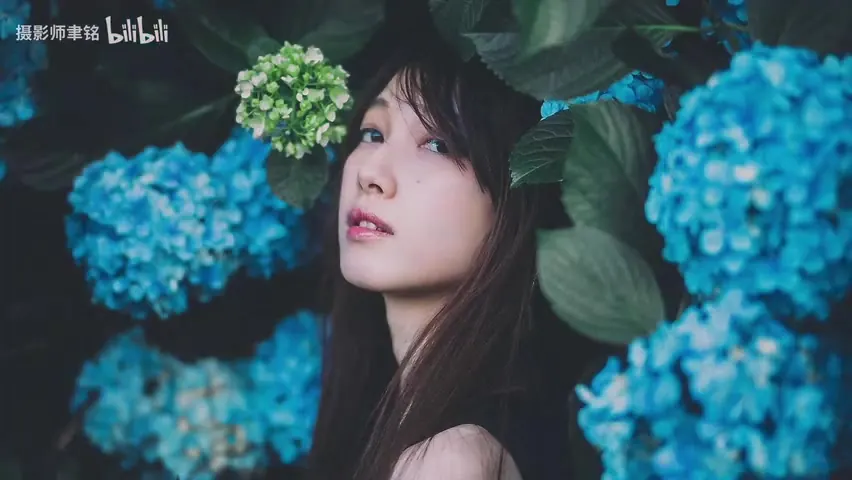 参考截图 01｜00:17 |
参考截图 02｜00:39 |
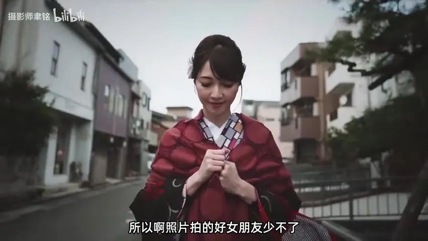 参考截图 03｜01:02 | 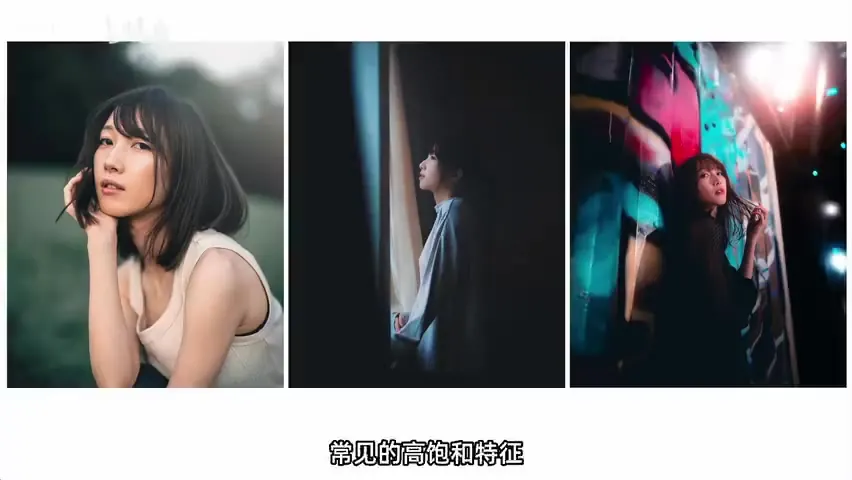 参考截图 04｜01:24 |
|
参考截图 05｜01:47 | 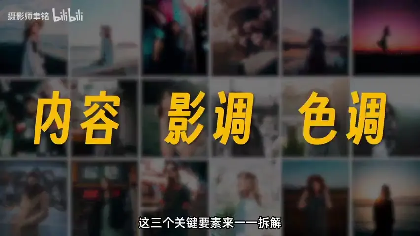 参考截图 06｜02:09 |
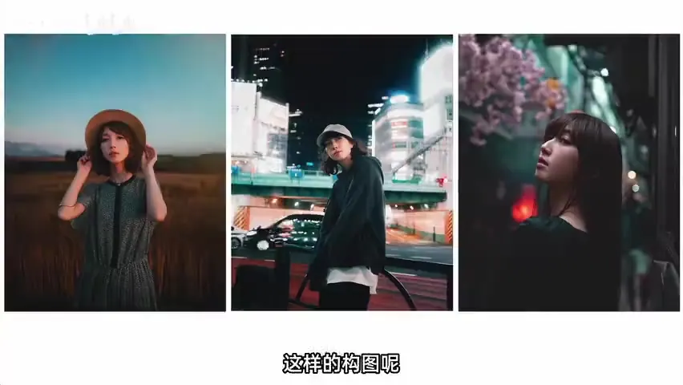 参考截图 07｜02:32 | 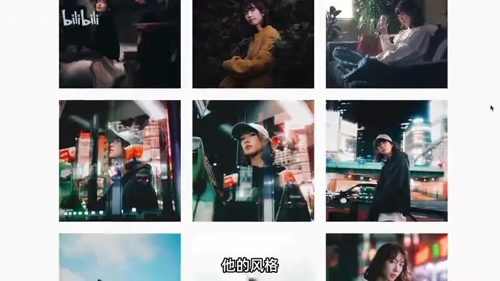 参考截图 08｜02:54 |
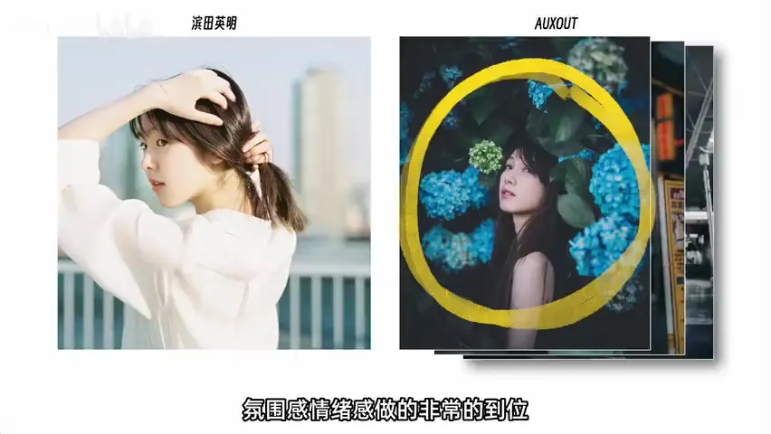 参考截图 09｜03:17 | 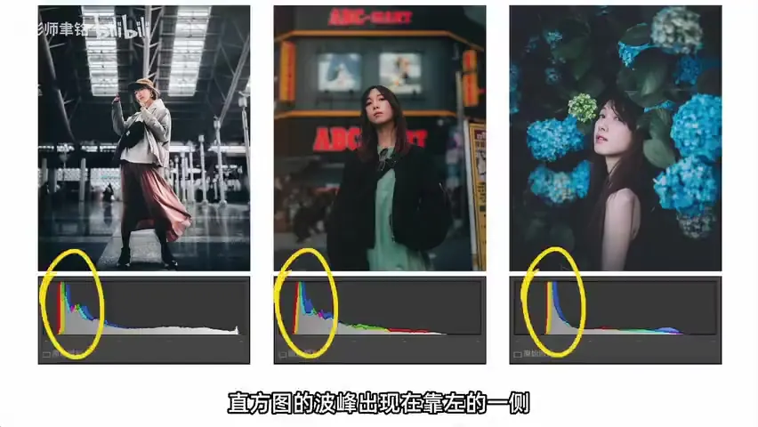 参考截图 10｜03:39 |
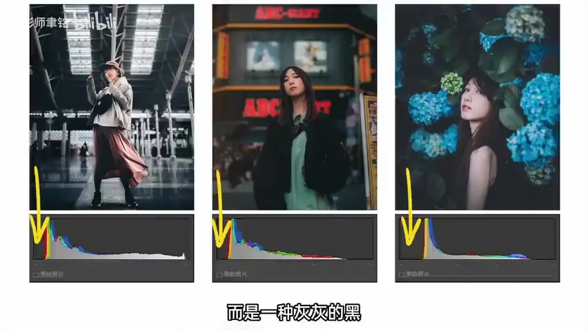 参考截图 11｜04:01 | 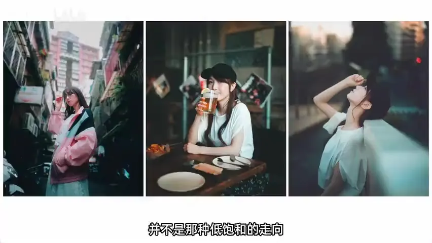 参考截图 12｜04:24 |
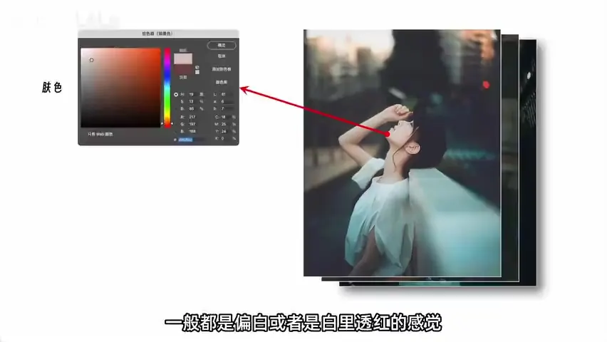 参考截图 13｜04:46 | 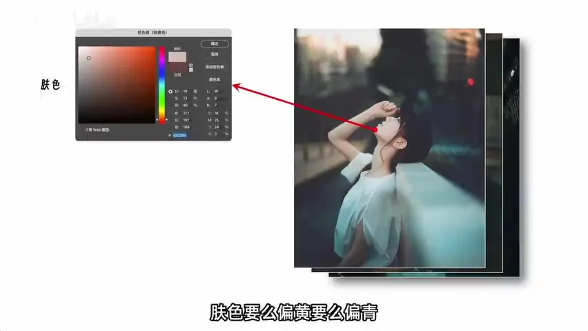 参考截图 14｜05:09 |
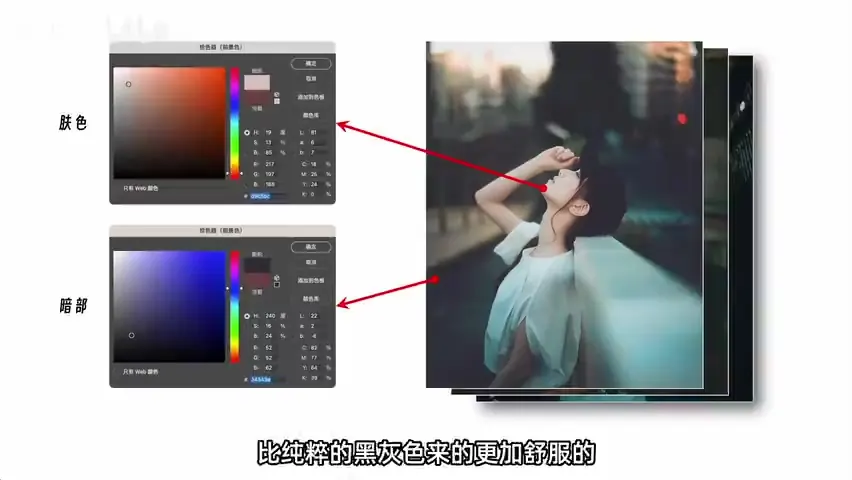 参考截图 15｜05:31 | 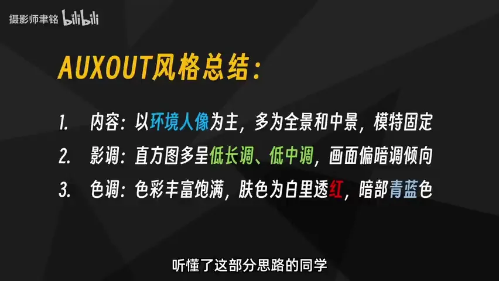 参考截图 16｜05:54 |
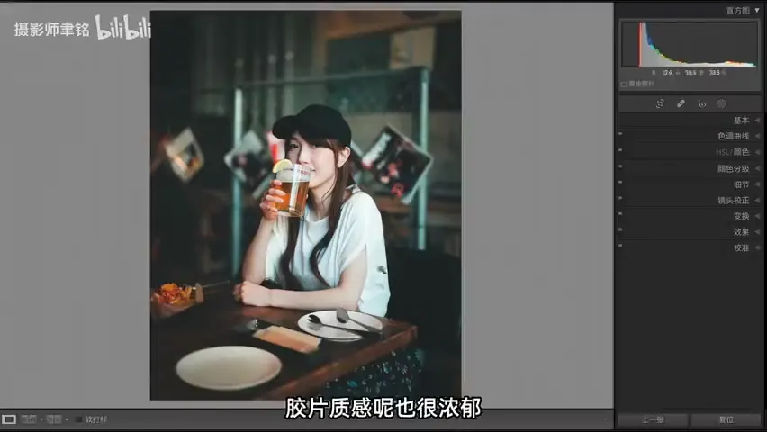 参考截图 17｜06:16 | 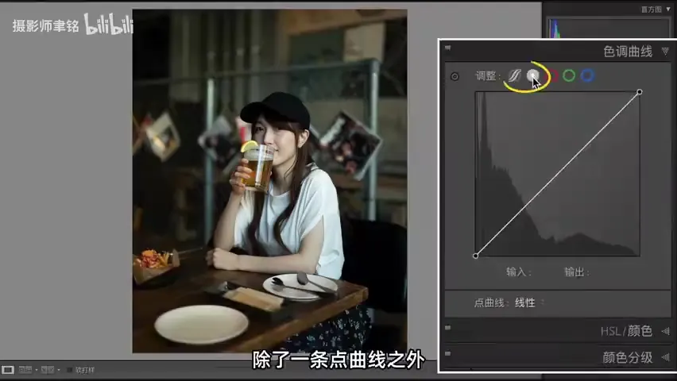 参考截图 18｜06:39 |
一页速览
风格目标 | 围绕“AUXOUT摄影风格仿色”建立一套可复盘的观察和调色流程。 |
观察顺序 | 先看参考图与素材是否匹配，再看直方图和明暗关系，最后拆肤色、环境色、冷暖关系。 |
操作顺序 | 基础面板定亮度与反差，曲线塑造影调，HSL/混色器处理主色，颜色分级/校准统一氛围，局部工具收尾。 |
学习重点 | 不要只记参数；每一步都要对应画面问题，例如偏黄、过曝、肤色脏、暗部死黑、背景颜色杂乱等。 |
学习目标
能从参考截图中判断目标风格的题材、光线、影调和主色倾向。
能把视频里的滑块操作翻译成“解决什么画面问题”的思路。
能用基础面板、曲线、HSL、校准、颜色分级和局部调整完成一轮完整复盘。
能把同一套方法迁移到自己的照片，并根据素材差异微调而不是硬套数值。
能用前后对比、直方图和参考图同屏检查最终结果是否接近目标风格。
视频要点提炼
时间 | 类型 | 内容摘记 |
03:12 | 关键讲解 | 而且它的照片應該是加了一些暗角的 |
03:57 | 关键讲解 | 這會讓照片的最暗部不是純黑色 |
06:29 | 关键讲解 | 這裏我們不去用基本面板裏的曝光度 |
06:45 | 关键讲解 | 在曲線的下方有高光、亮色調、暗色調、陰影這幾個參數 |
06:51 | 关键讲解 | 是不是和基本面板裏的白色色階、高光、陰影、黑色色階有點類似啊 |
07:08 | 关键讲解 | 我們可以適當的壓低一點高光 |
07:52 | 关键讲解 | 而這四個區域對應的正好是下面的高光亮色調 |
09:10 | 关键讲解 | 那麽中間調和高光區域可以稍微的去往上提一些 |
09:35 | 关键讲解 | 基本面板裏的白色色階高光這參數是 |
10:01 | 关键讲解 | 稍微的去加一點點清晰度吧 |
10:57 | 关键讲解 | 也就是混色器 |
11:22 | 关键讲解 | 色相我們可以往綠色去偏一偏 |
Lightroom 复盘流程
参考图观察：先截取作品参考、原图与成片对比，判断画面属于清新、胶片、电影感、夜景、街拍、人像或风光中的哪一种。
基础面板：调整曝光、对比、高光、阴影、白色和黑色，让素材进入可调状态；这一步解决明暗和层次，不急着追求最终颜色。
曲线塑形：用曲线控制黑白端、中间调和整体反差；胶片感通常会抬黑或压白，电影感常强调暗部和高光的关系。
颜色控制：用 HSL/混色器拆解肤色、天空、绿植、衣服和背景；重点只动影响画面的主色，不把所有颜色都调一遍。
统一氛围：用校准、颜色分级、色温色调和少量局部工具统一冷暖关系，让画面不散、不脏、不互相打架。
局部收尾：处理脸部、天空、窗口、高光边缘、暗部噪点和主体突出度，最后和参考图同屏复查。
关键截图与讲解
图 01 | 00:50 | 关键画面
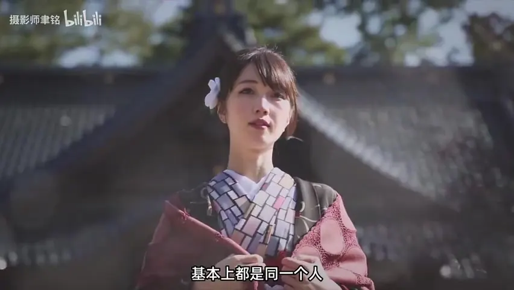
学习要点：Hello大家好
图 02 | 01:24 | 关键画面
学习要点：Hello大家好
图 03 | 01:59 | 关键画面
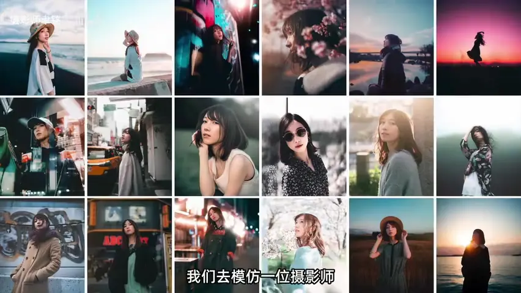
学习要点：Hello大家好
图 04 | 02:33 | 关键画面
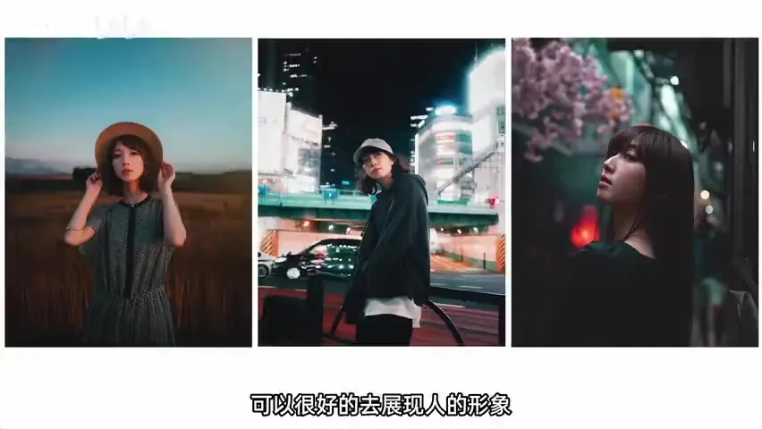
学习要点：Hello大家好
图 05 | 03:08 | 关键画面
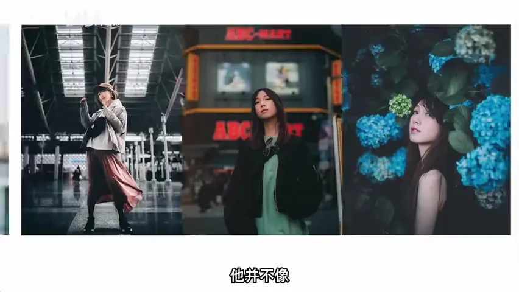
学习要点：Hello大家好
图 06 | 03:42 | 关键画面
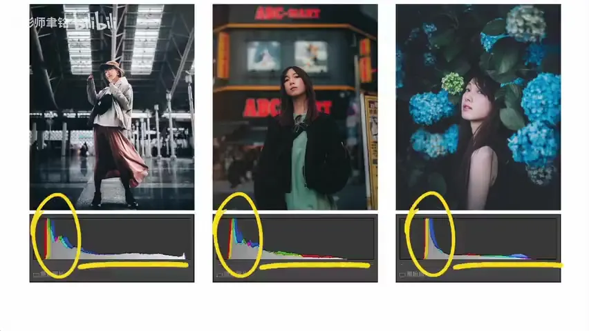
学习要点：Hello大家好
图 07 | 04:16 | 关键画面
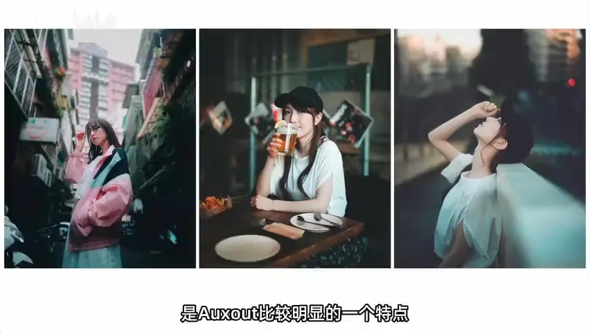
学习要点：Hello大家好
图 08 | 04:51 | 关键画面
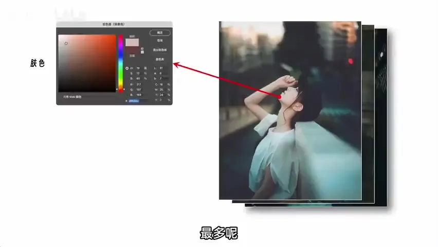
学习要点：Hello大家好
图 09 | 05:25 | 关键画面
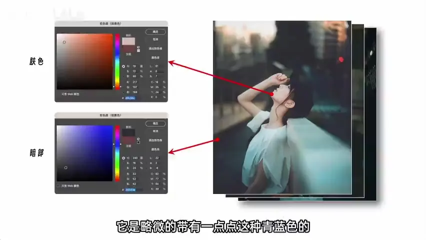
学习要点：Hello大家好
图 10 | 06:00 | 关键画面
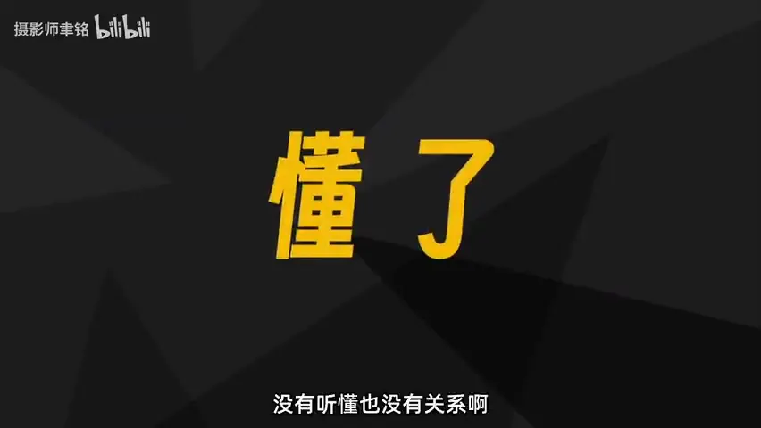
学习要点：Hello大家好
图 11 | 06:34 | 关键画面
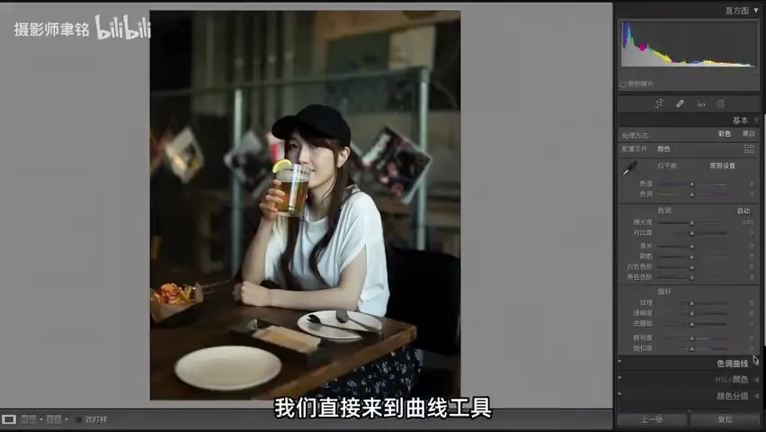
学习要点：Hello大家好
图 12 | 07:09 | 关键画面
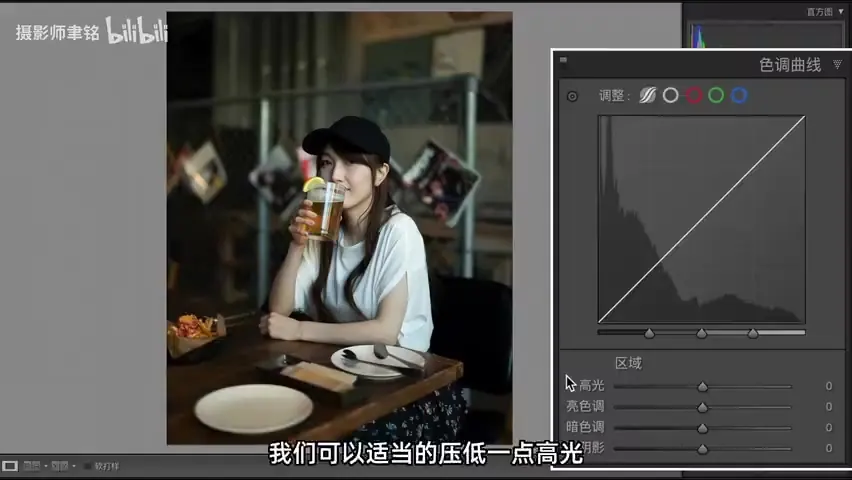
学习要点：Hello大家好
图 13 | 07:43 | 关键画面
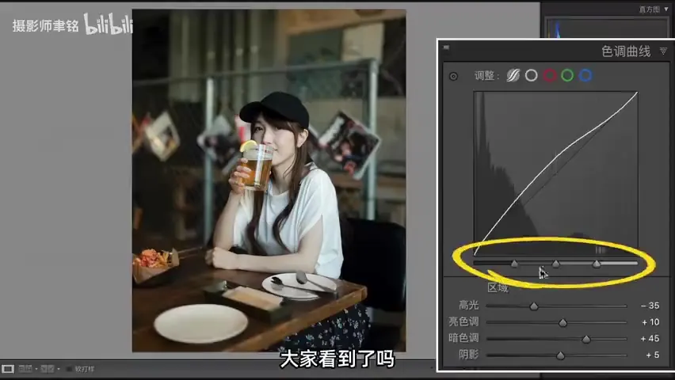
学习要点：Hello大家好
图 14 | 08:17 | 关键画面
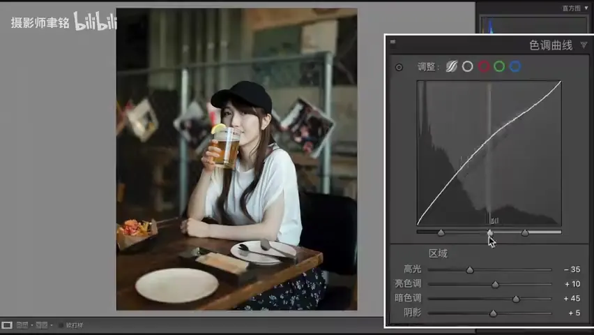
学习要点：Hello大家好
图 15 | 08:52 | 关键画面
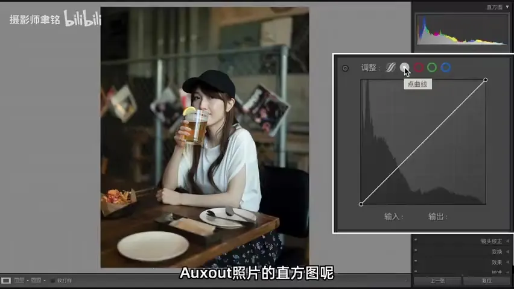
学习要点：Hello大家好
图 16 | 09:26 | 关键画面
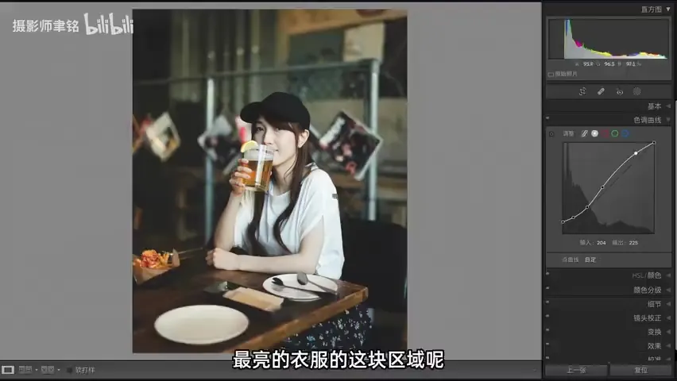
学习要点：Hello大家好
图 17 | 10:01 | 关键画面
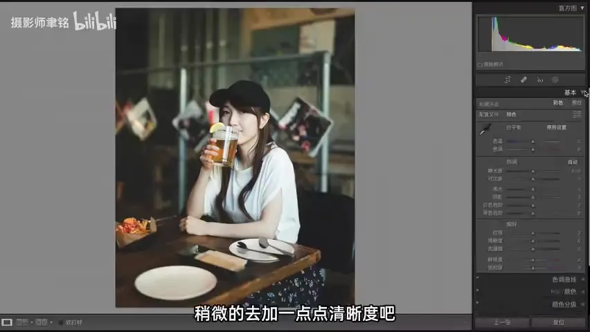
学习要点：Hello大家好
图 18 | 10:35 | 关键画面
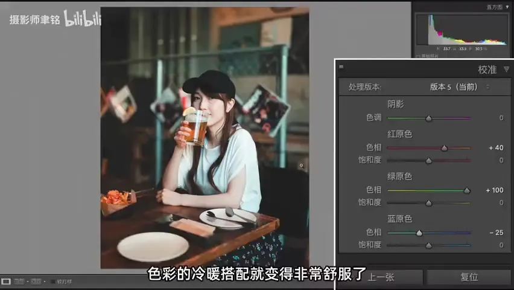
学习要点：Hello大家好
图 19 | 11:10 | 关键画面
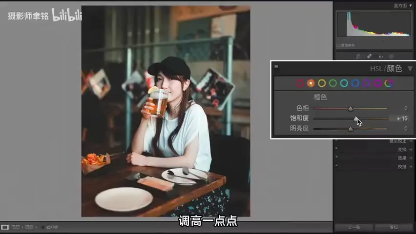
学习要点：Hello大家好
图 20 | 11:44 | 关键画面
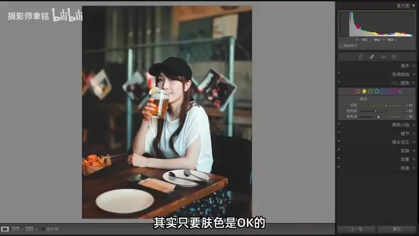
学习要点：Hello大家好
图 21 | 12:18 | 关键画面
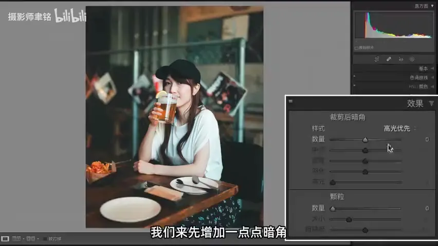
学习要点：Hello大家好
图 22 | 12:53 | 关键画面
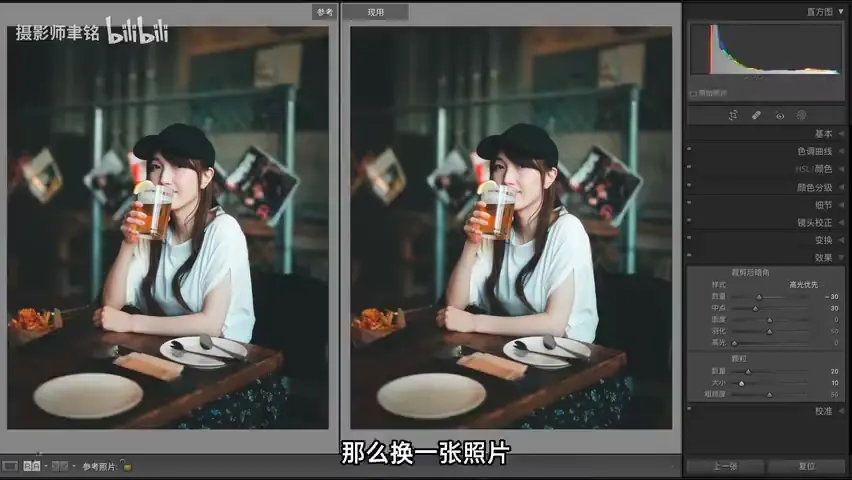
学习要点：Hello大家好
练习任务
找一张和《追色手记05》题材接近的照片，先写下目标风格的三个关键词。
截取 3-5 张参考图，同屏观察肤色、暗部、高光和背景色，不先动参数。
只用基础面板完成第一版，确认曝光、高光、阴影和黑白场没有明显问题。
用曲线建立主要影调，再用 HSL/混色器处理最重要的 2-3 个颜色。
完成后把原图、成片、参考图并排检查，记录最有效的三个操作。
复盘清单
检查项 | 通过标准 |
参考匹配 | 题材、光线和拍摄场景与参考风格足够接近。 |
影调 | 暗部、高光、中间调关系明确，不是单纯拉亮或压暗。 |
肤色 | 肤色符合风格方向，同时不发脏、不偏灰、不失真。 |
环境色 | 背景颜色统一，主色明确，杂色被压住。 |
质感 | 清晰度、纹理、降噪、颗粒和暗角符合目标气质。 |
迁移 | 换一张同组照片后，只需微调曝光和局部即可成立。 |
时间轴速查
时间 | 模块 | 重点 |
00:00-01:44 | 模块 1 | Hello大家好；我是攝影師玉明；歡迎和我一起用攝影開啟新的事件 |
01:44-03:28 | 模块 2 | 我會把這期教程用到的素材分享給大家；方便大家跟著我的思路一起來練習；我們先來分析思路 |
03:28-05:12 | 模块 3 | 從照片的脂肪圖也可以清楚的看到；它們普遍呈現的是低長調或者是低中調；也就是說脂肪圖的波風出現在靠左的一側 |
05:12-06:56 | 模块 4 | 那麽其實問題都出在對色調的理解和控制上；膚色還是比較關鍵的；此外我們還可以發現 |
06:56-08:39 | 模块 5 | 那麼我們在這裏調整畫面的影調；跟在基本面板裏直接調整去相比；有什麽優勢呢 |
08:39-10:23 | 模块 6 | 基礎不紮實的同學可以去補一補這部分的內容；下面我們來調點曲線；這條曲線大家應該是比較熟悉了 |
10:23-12:07 | 模块 7 | 原理我在系統課程裏面也詳細的講解過；看到沒有；色彩的暖暖搭配就變得非常舒服了 |
12:07-13:51 | 模块 8 | 看上去是不是更加舒服了一些；來到效果面板；這一步大家應該都知道要做什麼了對不對 |
全部图片
本页共保留 39 张来自 Word 的图片。上方正文中已按文档顺序展示，这里作为总览索引。